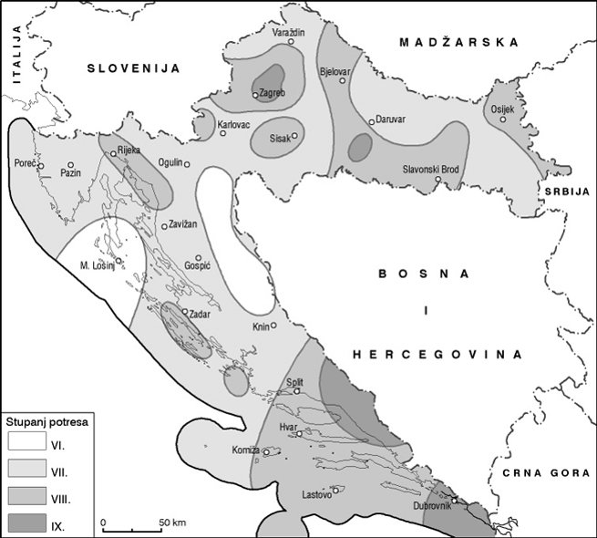

Zagreb su 9. studenoga 1880. i 22. ožujka 2020. godine pogodili najsnažniji potresi u posljednjih nekoliko stotina godina. Što su potresi? Mogu li se predvidjeti? Što je epicentar, a što hipocentar? Kako se šire potresni valovi i kako je definirana ljestvica magnituda? Mrežno izdanje Hrvatske enciklopedije – opće enciklopedije koja je besplatno dostupna i komunikacijski otvorena svojim korisnicima – nudi odgovore na sva pitanja koja si postavljate o potresima, o opasnostima koje nose seizmičke aktivnosti našeg planeta i znanstvenim uvidima koji nam pomažu shvatiti prirodne zakonitosti kojima smo kao živa bića podložni.
Hrvatska enciklopedija o potresima
Hrvatska enciklopedija o seizmologiji
Hrvatska enciklopedija o Richterovoj ljestvici

Znate li da je razvoju geofizike i seizmologije uvelike pridonijela i Hrvatska? Jedan je hrvatski znanstvenik, potaknut upravo potresom u Zagrebu 1880., postavio 1901. godine seizmološku postaju u Zagrebu, opremio je tada najmodernijom opremom i znatno pridonio razvoju postupka određivanja epicentra potresa. Znate li tko je on bio? Klikom na sliku saznat ćete njegovo ime i njegov velik doprinos znanosti koji se danas naziva upravo prema njemu – Moho!
Detaljniji životopis znamenitoga hrvatskog geofizičara potražite u Hrvatskom biografskom leksikonu.